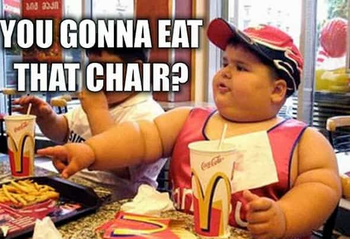
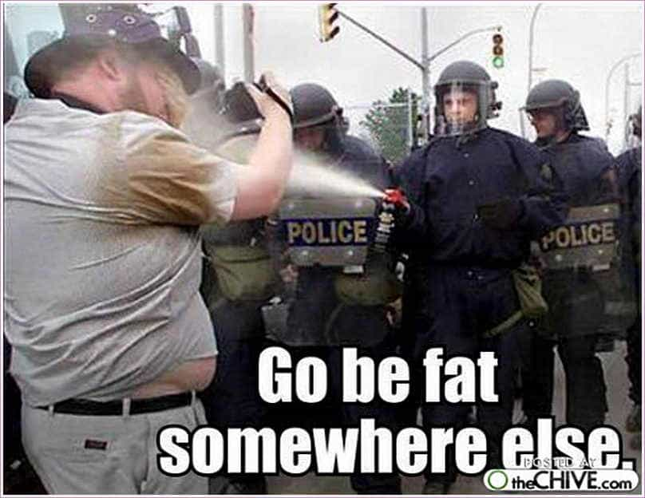
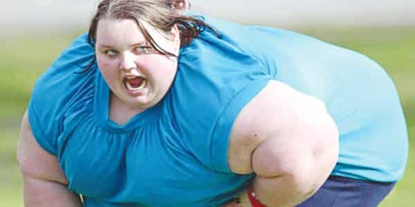
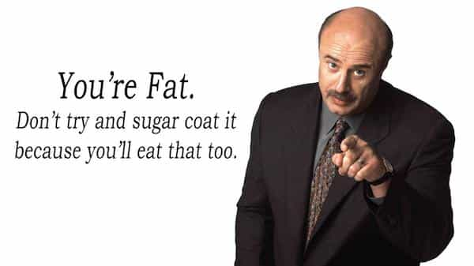

< < < Back
6 Reasons To Create Fat Control Laws And Obesity-Free Zones – Return Of Kings
Lately, gun-free zones and gun control laws are all the rage among the globalists and liberals of all shapes (usually circular) and sizes .
Those measures, solely aimed at disarming the people and depriving them of the sacred right to defend themselves, has shown its vast ineffiency, with gun victims and terrorist attacks on the rise in those zones since no honest citizen can shoot back to stop the massacre.
Here is why I propose, once a conservative government reaches the White House, to create Fat Control Laws (“F.C.L”) and Obesity-Free Zones (“O.F.Z”) as obesity is indeed a more serious threat to the lives of Americans than honest citizens carrying legally purchased guns. Here are six potential benefits:
1. Simple philanthropy
Obese people are delusional thinking that it is great to be a useless sack of shit. Nowadays, they get fed a distorted reality saying that “big and round is beautiful” when the natural reaction, deeply branded in our DNA, is disgust, mockery and suspicion.
Fat and sedentary lifestyles kill much more than guns. The war against obesity is as important as the war on crime or drugs. Bovine people not only harm themselves but others too. By creating measures to prevent them from becoming fat or exhorting them lose weight, we are helping our common man to preserve his dignity as a human being.
In their case, sugar and salt create a dopamine rush and an addiction loop very similar to an addiction to opiates. We must show our potbellied (or barrelbellied) junkies the way as they can’t take the steps themselves.
Just like with restrictions on cigarettes, if they are stupid enough to gorge themselves on calories, we must conclude that there is a severe lack of judgement on their part and prevent them from purchasing the source of their misery.
2. Preserving aesthetics and other senses
No more eyesore of seeing fatties rolling around everywhere you go. Imagine a beach with a plethora of more feminine, attractive and thin women by banning whales in bikinis.
Our nostrils would also be free of the olfactory offence that they throw in our faces. Say goodbye to the pungent smell of fat rolls sweat at your local grocery store.
No more 280-lb SJW land whales with laboured breath sounds in waiting rooms or uncontrolled farting in the public transport like you are in a cattle train. It could be tomorrow.
3. Positive impact on children

I do not want these people to roam free and that my future progeny can witness it and think that this is normal. Worse, if the PC politburo tells them it is beautiful to be a beached whale. Let’s send them far until they get better. Out of sight, out of mind as they say.
Legal elements should be implemented against pernicious publicity aired on television and directly aimed at children, whether by the time chosen to air it or the promotion it makes of unhealthy eating.
Of course, with Fat Control Policies, kids will get bullied at school. Some will cut themselves for being called fattie. So what? Adapt and overcome or crawl in a ball and cry. The weakest has to be left behind if he does not want to save himself.
4. A healthier population
You are under arrest for being an immovable, gargantuan arsehole
Fat is not a silent killer. Hundreds of thousands of people die (with a loud thud) every year of obesity-related diseases, a largely preventable cause of death worldwide. Today, 1 in 5 Americans and 1 in 11 Britons dies from being a fat arse with no self-control.
It is a fact that obesity causes death by cardiac arrest, diabetes, coronary and liver diseases, cancer, and hypertension among others. Promoting a healthy lifestyle and physical activity will create a longer life expectancy.
Physically healthier people are mentally healthier too (boost of self-esteem and confidence). Fat Control Laws will reduce mental health issues such as depression, inferiority complex or suicidal tendencies caused by obesity. That is also less money spent by the taxpayer
5. A boost for the economy
According to a 2009 report, ham planets cost the economy $117 billion a year. And that is for the American economy alone! The number of human cattle is still growing exponentially. It inflicted more than a $325.8 billion loss to the economy in 2010.
In 2016, we can reasonably assume that the number of obese people has grown and has impacted the wallet of your average American even harder.
A fitter population, with its nutritional choices, would result in a more natural, higher-quality food industry. Smaller amounts of food produced and needed, resulting in reduced resources and materials wasted during and after its production.
We could see the end of excessive fossil fuel used to transport land walruses and their fat arse across long distances and hogging the space that could be use by three normal individuals.
Healthier, more active people are happier, more productive and successful since the cogs of the machinery are not coated in fat. An age of stronger, self-governed, high-energy men bringing a healthier society. It’s YUGE!
6. A new sexual and romantic market

It will bring a more balanced sexual arena to limit the accumulation of fat. A radical answer to the phenomenon of plummeting testosterone levels caused by high fat percentage, trimming the numbers of plump omegas and sexual market voluntary rejects.
Let’s impose a healthier diet for higher numbers of attractive, thin and pretty women. Greater numbers of quality girls to choose from reduces aggressive competition, which decreases the bitch shields of thin, entitled girls.
Endless supplies of betas queuing to capture crumbs of their attention would be a thing of the past. As I said it before, “male thirst is the root of all evil” when it comes to romantic competition.
Sexier citizens means more relationships, a peak in libido and reproduction of physically and mentally balanced individual, helping nations suffering from low birth rate.
One more element for the protection of Western society (being the most affected one) and its people, cementing the bases of a strong future, fighting globalism and the myth they try to sell us about global overpopulation.
By logical natural process, bronies, corpulent man-children and manga conventions should also disappear soon.
The Fat Control Laws
1. Segregated Obesity-Free Zones

Our diabetic mammoths must be isolated from further propaganda and tasty treats.
This is why we should create large (VERY large) fenced areas to protect the healthy subjects, as fat is more dangerous than guns.
Let’s pen the big-boned rejects in separated zones where access to junk food and other harmful products would be forbidden. Fresh water, open spaces, salad and treadmills as far as the eye could see.
We shall call it the “David Fatrelle Center for Porcine Rehabilitation”
2. Permits

A permit would have to be issued (similar to a gun-carrying permit) for the purchase of junk food, high-carb snacks, soda drinks etc. After a doctor’s physical exam of the patient, slim citizens would be delivered a permit with a stamp of approval, granting them access to supermarkets or venues where processed or junk food is served.
3. Mandatory workouts

Compulsory exercise would be imposed to obese people to reach a standard BMI. We could bring it up a notch where a fine could be issued after a determined period of time if the weight loss target has not been reached.
A Steps Counter Activity tracker would have to be worn or installed on their smartphone and a quota of physical activity would have to be reached on a day to day basis.
Just like the programs for convicted criminals or drug abusers with reports to the local police station on a regular basis, the stubbornly chunky would be followed during a rehabilitation stage and their progress monitored.
4. Fat shaming

Fat shaming works great, as we have seen before. Remember the shitstorm of the “beach body” campaign, immediately declared thought criminals by the Body Positive Lobby or Islamic Thought Tribunal of Londonistan?
Or the cold-blooded leaflets given by anonymous though criminals to particularly adipose London Tube passengers? YUGE success.
Pourquoi ça n’existe pas?
Fat people are a dead weight to society in all senses of the term and to compensate this burden, they must chip in one way or another and repair the harm they cause.
Fitter people means a self-aware, powerful mass that strives for greatness.
But the liberals in charge don’t want that. This is why they produce massive amounts of harmful, processed food and encourage the pleb, by manipulating publicity and promoting make-believe, to remain fat, weak and above all, docile.
It’s all part of a plan. Fat Control Laws are the answer to that great evil.
Read More: 6 Reasons To Date An Obese Girl